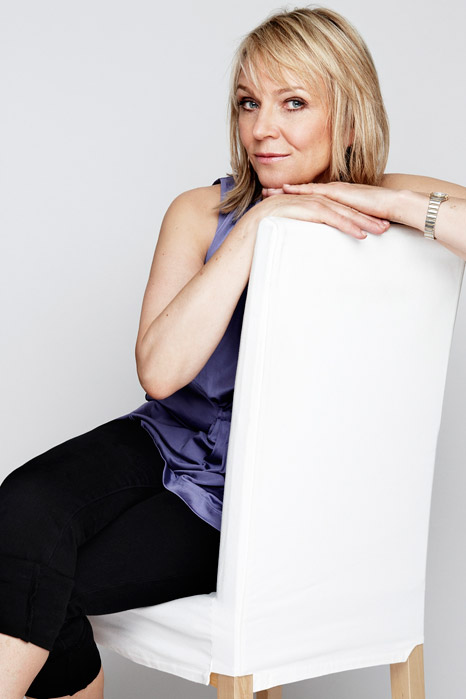
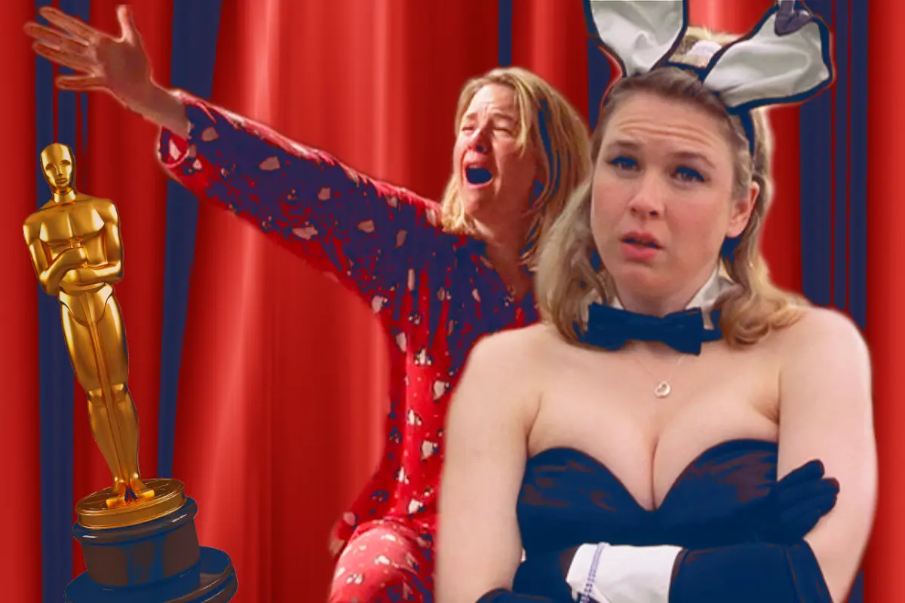

Helen Fielding (född 1958) är en brittisk roman- och manusförfattare, mest känd för den internationella succéserien om Bridget Jones.
Genombrott och framgång: Serien inleddes med Bridget Jones dagbok (1996) och På spaning med Bridget Jones (1999), vilka publicerades i 40 länder och såldes i över 5 miljoner exemplar.
Båda filmatiserades med stor framgång, och The Guardian utsåg den första boken till en av de tio romaner som bäst sammanfattar 1900-talet.
Fortsatta verk: Fielding skrev kolumner i brittisk press och återvände till karaktären med romanen Bridget Jones: Mad About the Boy (2013) som sålde i över 46 000 exemplar första dagen och låg ett halvår på bästsäljarlistan.
Kulturell påverkan: Karaktären Bridget Jones har blivit en brittisk kultikon. Hon har bland annat utsetts av BBC till den 29:e mest inflytelserika personen i Storbritanniens kultur (2004) och en av de sju kvinnor som påverkat brittisk kvinnokultur mest under de senaste 70 åren (2016).

• Bridget Jones dagbok. Författaren Helen Fielding vann det prestigefyllda priset Book of the Year på British Book Awards. Boken nominerades även till specialpriset "30 from 30" på samma gala för att uppmärksamma de bästa böckerna under de senaste tre decennierna.
• På spaning med Bridget Jones. Uppföljaren blev en stor försäljningssuccé, men fick inga egna tunga prisnomineringar jämfört med de andra delarna i serien.
• Bridget Jones: Mad About the Boy. Den tredje boken nominerades till bästa skönlitterära bok på British Book Awards samt till bästa humor på Goodreads Choice Awards. Den kom även med på den korta nomineringslistan för humorpriset Bollinger Everyman Wodehouse Prize.
• Bridget Jones dagbok (Bridget Jones's Diary). Filmen fick 32 nomineringar och 8 vinster, där Renée Zellweger nominerades till en Oscar, Golden Globe, BAFTA och SAG Award för bästa kvinnliga huvudroll. Den nominerades även till bästa film på Golden Globe samt bästa brittiska film på BAFTA, medan Colin Firth vann publikens pris på European Film Awards och filmen vann pris för bästa manus på Evening Standard British Film Awards.
• På spaning med Bridget Jones (Bridget Jones: The Edge of Reason). Uppföljaren samlade 11 nomineringar utan några vinster, men Renée Zellweger nominerades till en Golden Globe för bästa kvinnliga huvudroll. Filmen fick även nomineringar till bästa brittiska film på Empire Awards samt flera publikpriser på People's Choice Awards och Teen Choice Awards.
• Bridget Jones: Mad About the Boy. Den fjärde filmen fick 28 nomineringar och 8 vinster, inklusive en vinst för bästa tv-film på Critics' Choice Awards och en nominering i samma kategori på Primetime Emmy Awards. Filmen vann även två priser på National Film Awards samt en Astra TV Award för bästa tv-film, och nominerades till bästa brittiska film på BAFTA.